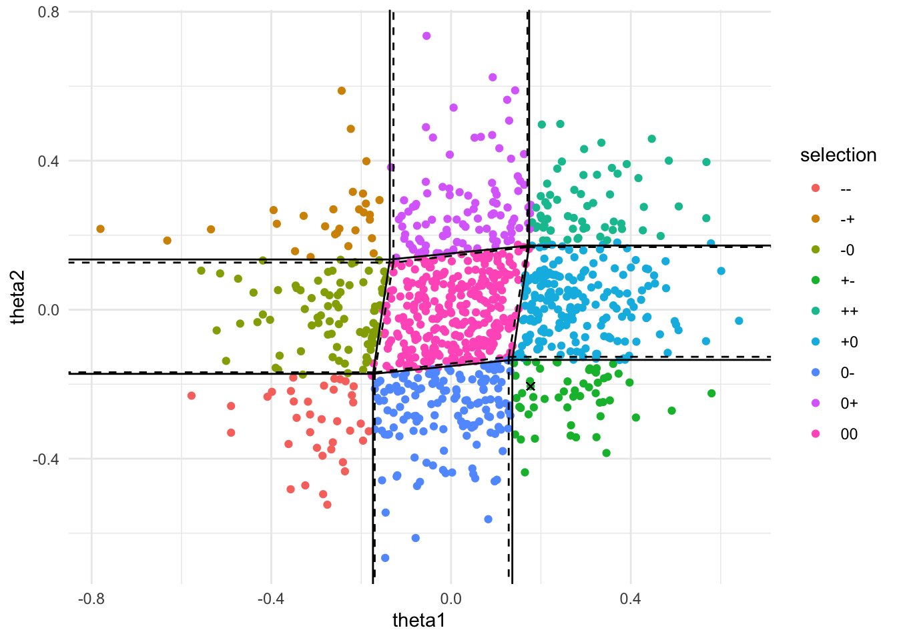

Generalizing Lasso penalty to non-linear model, e.g. a binomial model.
Author
Kenneth Hung
Published
April 10, 2017
Following a paper by Lee et al. (2016) on the correcting for the selection bias after lasso-based selection, a natural progression is to consider general penalized likelihood selections. In GLM, we are at least provided with a sufficient statistics, but this would not be the case in a more general likelihood setting, rendering the description of the selection event a lot more blurry.
Most specifically, the set up is as follows: we have a matrix \(X\) consisting of \(n\) row of covariates, \(Y\) a vector consisting of all the responses. We assume the model, given by the log-likelihood below,
\[\sum_{i=1}^n \ell(\theta_n; Y_n, X_n).\]
Here we will not move into high-dimensional regime and thus assumes \(\theta_n\) to have dimension \[d\]. Subsequently, we perform selection based on maximizing
Around three weeks ago, Will and I came up with a way to tackle this problem — together with a non-exhaustive, non-optimized list of conditions needed. Unfortunately shortly after Will discovered a paper by Taylor and Tibshirani (2017) that arrived at an almost identical solution. While our result might no longer be groundbreaking, we hope that this post will provide a different perspective from Taylor and Tibshirani (2017), and assist anyone who happens to also be reading Taylor and Tibshirani (2017).
The problem has two main hurdles: - approximating the selection event in a reasonable yet theoretically valid manner; - choosing a test statistic with a nice asymptotic distribution.
We can make both decisions at once by considering the selection event. In GLM, with a sufficient statistic, the selection event will always be measurable with respect to this sufficient statistic. This measurability requirement results in fuzzy edges if we plot out the selection event based on a non-sufficient statistic.
We don’t have this sufficient statistic anymore in a general likelihood setting. Conventionally, both the score at a fixed parameter and the MLE are thought of as ‘asymptotically sufficient’ without a proper definition. Since we are looking into asymptotics anyways, these two statistic seems perfect for our use. A bonus is that their asymptotic distributions are well known.
Following classical asymptotic analysis as explained in van der Vaart (1998), we will assume that \(\theta_n = \theta_0 + \beta / \sqrt{n}\) and thus converges to a \(\theta_0\) that lies in the null hypothesis \(\Theta_0\). Other possible asymptotic regimes includes modifying the lasso minimization problem into a ‘non-centered’ lasso problem
but as it turns out the asymptotics will work out to the same solution anyways. For the lasso selection to not go trivial (always selecting certain variables, always not selecting certain variables, always making the correct selection), we also need to scale \(\lambda_n\) as \(\lambda_n = \lambda \sqrt{n}\).
If we take the subgradient of the objective, normalized by \(1 / \sqrt{n}\), with respect to \(\theta_n\), we get something like
where \(s_n\) is the subgradient of the \(L_1\)-norm. This is the crucial step in Lee et al. (2013). For a the same set of variables selected and the same signs assigned, \(\lambda s_n\) is a determined set. So what’s left is to relate the normalized score to the sufficient statistic.
In the asymptotic regime, the asymptotic sufficiency of score and the MLE means we can determine all the likelihood ratio, or equivalently, the entire sore function. From here we can approximate the score as a linear function at \(0\) as
We cannot however approximate this as a linear function at other points, such as the MLE restricted to the null hypothesis \(\Theta_0\), as it reduces the degree of freedom.
How do we choose between these two approximation? In finite sample, the ‘data’ might not lie close to \(0\), rendering the first approximation ill-motivated. The second one has an appeal that it moves with the data and tends to approximate the score function better locally near the MLE.
To be more concrete, we can have a look at this in practice. We generated 1000 samples of 100 points from a logistic model and ran glmnet on each of the 100 samples. The unrestricted MLE is used as the statistic and plotted below. Colors follow the signs and the variables selected.
Show the code
suppressPackageStartupMessages({library(foreach)library(doParallel)library(glmnet)library(ggplot2)library(dplyr)})theme_set(theme_minimal())Logistic <-function(z) {return(exp(z) / (1+exp(z)))}SignSummary <-function(x) {return(paste(ifelse(x ==0, '0', ifelse(x >0, '+', '-')), collapse =''))}HessianLogistic <-function(x, theta) { z <- x %*% theta psi.2nd <-exp(z) / (1+exp(z))^2return(-t(x) %*% (x *as.vector(psi.2nd)) /nrow(x))}HessianGaussian <-function(x) {return(-t(x) %*% x /nrow(x))}GLMSim <-function(theta, lambda, n, nRep =1000, family ='gaussian') {# GLMSim produces a plot of the true selection events by simulation, with# approximation of the selection event based on Taylor expansion of the# log-likelihood at the true theta (dahsed) and the MLE (dotted)## Args:# theta: true parameter# lambda: penalty parameter# n: sample size# nRep: number of points to be included# family: 'binomial' for logistic regression, 'gaussian' for linear# regression## Returns:# A plot of the simulationregisterDoParallel(cores =4)# generates nRep possible sets of n observations x.cov.rt <-rbind(c(1, -0.1), c(-0.1, 1)) x <-matrix(rnorm(n *2), n, 2) %*% x.cov.rtif (family =='binomial') { pr <-Logistic(x %*% theta) y <-foreach(i =1:nRep, .combine = cbind) %dopar% {set.seed(i)rbinom(n, size =1, prob = pr) } } elseif (family =='gaussian') { mu <- x %*% theta y <-foreach(i =1:nRep, .combine = cbind) %dopar% {set.seed(i)rnorm(n, mean = mu) } } else {stop('family is not binomial or gaussian') }# runs glmnet to compute the selected variables at s = lambda# computes mle as test statistic at s = 0 mle <-foreach(i =1:nRep, .combine = rbind, .packages ="glmnet") %dopar% { fit <-glmnet(x, y[, i], family = family, intercept =FALSE) coeff <-as.matrix(coef( fit, s =c(0, lambda), exact =TRUE,x = x, y = y[, i], family = family,intercept =FALSE ) ) selection <-SignSummary(coeff[-1, 2])data.frame(theta1 = coeff[2, 1], theta2 = coeff[3, 1],selection = selection ) } mle$selection <-as.factor(mle$selection)# computes the selection event based on the MLE at the first rowif (family =='binomial') { hessian <-HessianLogistic(x, as.numeric(mle[1, 1:2])) } elseif (family =='gaussian') { hessian <-HessianGaussian(x) }# computes the segments of the polyhedron for event '00' zero.seg <--t(solve(hessian, rbind(c(1, -1, -1, 1), c(1, 1, -1, -1)))) * lambda zero.seg <-cbind(zero.seg, zero.seg[c(2, 3, 4, 1), ]) zero.seg <-data.frame(zero.seg)# adds segment representing the other events zero.seg <-rbind( zero.seg, zero.seg %>% dplyr::mutate(X3 = X1, X4 =sign(X2) *10), zero.seg %>% dplyr::mutate(X4 = X2, X3 =sign(X1) *10) )# computes the selection event based on true thetaif (family =='binomial') { true.hessian <-HessianLogistic(x, theta) } elseif (family =='gaussian') { true.hessian <- hessian }# computes the segments of the polyhedron for event '00' true.zero.seg <--t(solve(true.hessian, rbind(c(1, -1, -1, 1), c(1, 1, -1, -1)))) * lambda true.zero.seg <-cbind(true.zero.seg, true.zero.seg[c(2, 3, 4, 1), ]) true.zero.seg <-data.frame(true.zero.seg)# adds segment representing the other events true.zero.seg <-rbind( true.zero.seg, true.zero.seg %>% dplyr::mutate(X3 = X1, X4 =sign(X2) *10), true.zero.seg %>% dplyr::mutate(X4 = X2, X3 =sign(X1) *10) )ggplot(mle) +geom_point(aes(x = theta1, y = theta2, color = selection)) +geom_point(x = mle[1, 1], y = mle[1, 2], shape =4) +geom_segment(aes(x = X1, y = X2, xend = X3, yend = X4),data = zero.seg, color ='black' ) +geom_segment(aes(x = X1, y = X2, xend = X3, yend = X4),data = true.zero.seg, color ='black',linetype ='dashed' ) +coord_cartesian(xlim =c(min(mle$theta1), max(mle$theta1)),ylim =c(min(mle$theta2), max(mle$theta2)) )}GLMSim(theta =c(0.05, 0), lambda =0.04, n =100, nRep =1000,family ='binomial')

We then look specifically at the sample marked with x. The approximating the selection event based on the score at zero will approximate the event much better around the origin, but we also care much less about this scenerio. The ‘high stake’ scanerio is when the statistic is close the the boundaries — and in these cases we would want the selection event to be approximated better for that section of the boundary. The MLE thus appeals to this.
The Hessian of the log-likelihood has to be approximated as well. The selection event given by the true Hessian is given as dashed lines above, while the estimated Hessian is given as solid lines. Notice that while the approximation on the left edge of the red region is not done well, the approximation is done well in the bottom edge, which is more important to us. Also notice that the estimated Hessian performs fairly well.
Finally, how is these approximations linked to that of Taylor and Tibshirani (2017)? They used the lasso estimate with one extra Newton step as their test statistic. Assuming the log-likelihood behaves sufficiently quadratic, this is the same as using the MLE. We admit that their approach probably has a slight edge, an MLE would require solving a whole new approximation problem, while a one-extra-Newton-step lasso estimate is extremely easy to compute. In application, we believe these two methods should perform similarly.
References
Lee, J. D., Sun, D. L., Sun, Y., and Taylor, J. E. (2016), “Exact post-selection inference, with application to the lasso,”The Annals of Statistics, 44, 907–927.
Taylor, J. E., and Tibshirani, R. J. (2017), “Post-selection inference for \(\ell\)1-penalized likelihood models,”The Canadian Journal of Statistics, 19, 1212.